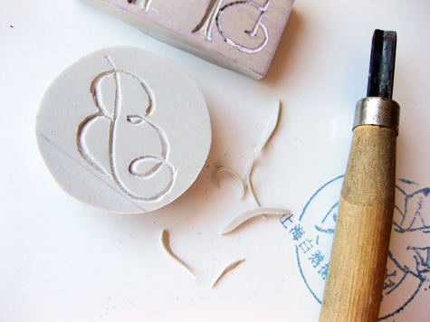

Design*Sponge - DIY Project: Monogram Stationery Set

I thought this was a really good idea (and not too complicated). Carve/cut your own stamps out of block linoleum. Still has a nice personal touch.
Previously: The Making of Raven's Wing - Coudal Partners Next: Hammacher Schlemmer - Arctic Force Snow Trac-Ball